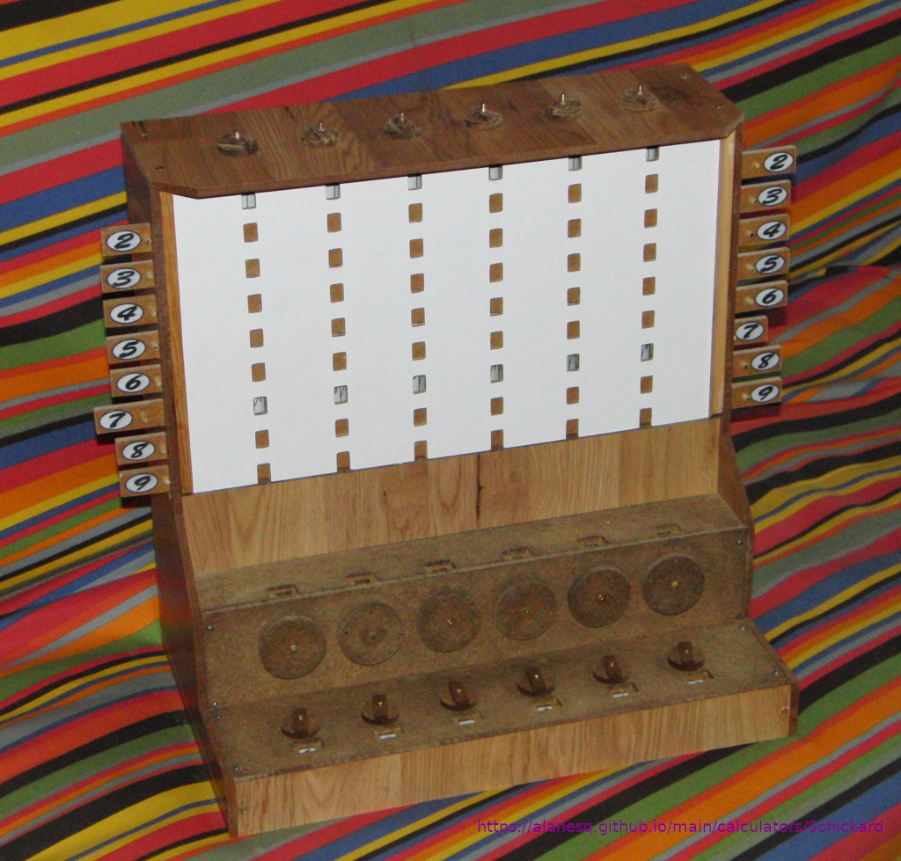

I am currently working on building the adder unit. The main time taken so far has been devising a system to cause the wheels to click between number
selected and to get the carry system to work. The issue with the carry is there is a conflict between the requirement for the arm (extended gear tooth)
to be long enough to turn the adjacent gear enough to click over to the next number and for it to be short enough not to prevent the adjacent gear
from being turned manually. I now have it working very reliably for a single carry but if the carry is to progress to the next gear it requires
assistance. I see from the videos in the link above that he also has to do this and I think this is just a problem with this design where all the
carries try to occur simultaneously rather than ripple through as more modern machines do. It may be that if the gears were made from metal this
would be improved as there would be less give/flex in the system?
Here is a picture of my progress so far: 
You can contact me on - alanesq@disroot.org
Back to my homepage